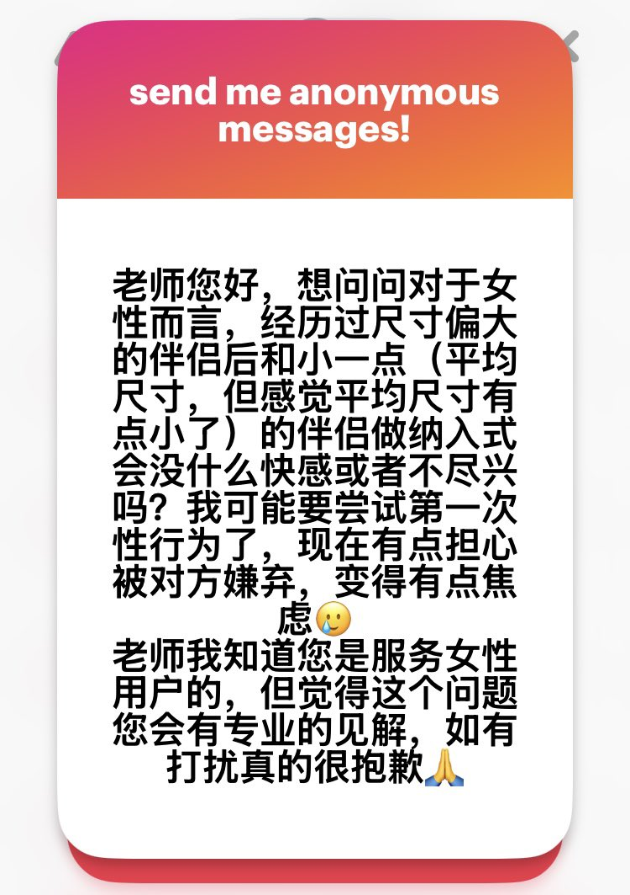

RT @myfanwy_wy: 首先，我并不喜欢用“开发”这个词来形容女性的性经历，因为这个说法本身就带有一种接近物化女性的意味，也默认了女性在性经历中只是被动接受的一方，弱化了她作为主体的感受、选择和主动性。 一个女性并不是“被更大的阴茎开发”了，她只是有过这样的经历而已。……


首先，我并不喜欢用“开发”这个词来形容女性的性经历，因为这个说法本身就带有一种接近物化女性的意味，也默认了女性在性经历中只是被动接受的一方，弱化了她作为主体的感受、选择和主动性。 一个女性并不是“被更大的阴茎开发”了，她只是有过这样的经历而已。 https://t.co/G1eY2uhwZS